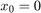

Q5
Contents
Clean Image
We begin this section by creating images I and J as 300x300 size uint8 matrices. After bringing these input images into Fourier Domain we try to estimate the shift along x axis and y axis when comparing image I and J. We generate phase values at (10,10), (11,10) and (10,11) as per equation (3) given in the paper " An FFT-based technique for Translation, Rotation and Scale-Invariant Image rotation".
By dividing the complex phase value that we generate for coordinates of the form (x+1,y) by that of (x,y) we calculate the xshift (after appropriate scaling). Similarly we use coordinates of the form (x,y+1) and (x,y) to generate the shift in y. We can evaluate this anywhere on the grid but we chose (10,10) for all experiments.
The Log fourier magnitude transform of the cross power spectrum shows a maxima at 271,71. This corresponds to -30,70 shift values.
Predicted Xshift = -30 Predicted Yshift = 70
Noisy Image
In order to display consistent results for report we tested with a fixed random seed set to default (i.e. default seed (0) and algorithm (Mersenne Twister)) All settings for this experiment are the same as the previous part, with the exception of the addition of gaussian noise of zero mean and variance of 20. This leads to inconsistent predictions for shift.
The effect of this is clearly demonstrated in the Log fourier magnitude transform of the cross power spectrum, where a maxima is visible at -30,70 but this peak is plagued by a a very low SNR.
single coordinate based Predicted Xshift = -29.1532 Predicted Yshift = 48.2141
Complexity of Algorithm
For an NxN image, a pixel wise image comparison would take the order of N^4 operations, as there are N^2 pixels to compare, and N^2 locations that the image has to be shifted to for each comparison. In contrast this approach takes the order of Nlog(N) operations to generate DFT, followed by matrix multiplications that can take upto order N^2 to generate. Therefore DFT based approach takes order N^2, making it much faster than pixel wise comparison.
Rotation of Images
In the case of translation of image we were provided with a simple linear equation, where we could fix value of one coordinate and increase value of the other to obtain a unit change. This was used to evaluate x and y translation shifts.
In the case of a rotated image, we are fortunate to receive similar linear equations, but we first convert the image into its magnitude components removing the effect of translation. Subsequently we convert the image into a polar representation, where there is a displacement in one coordinate, which is the angle. We can follow exactly the same steps that we have done for calculating shift in x and y coordinates, applied to r (radius) and  (angle) coordinates.
(angle) coordinates.
is identical to solving for .
Here we generate and from input images by first applying DFT to the input images which and taking magnitude to remove phase difference corresponding to image translation.